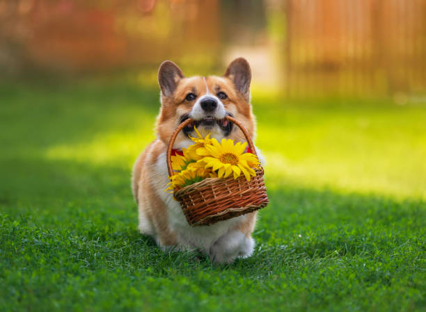
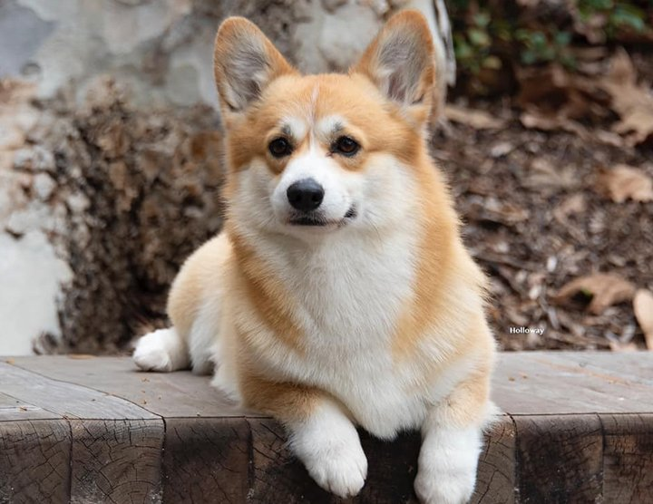
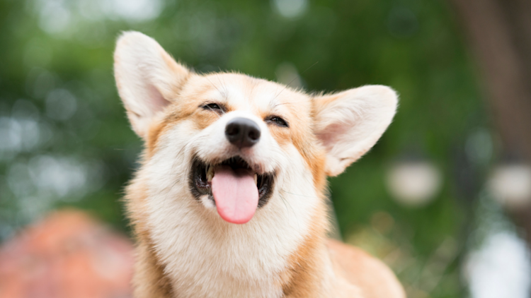
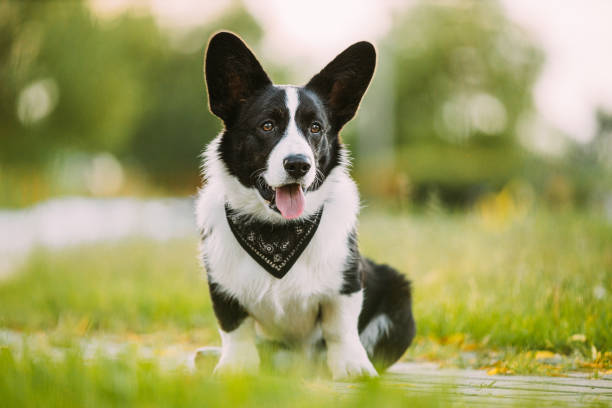
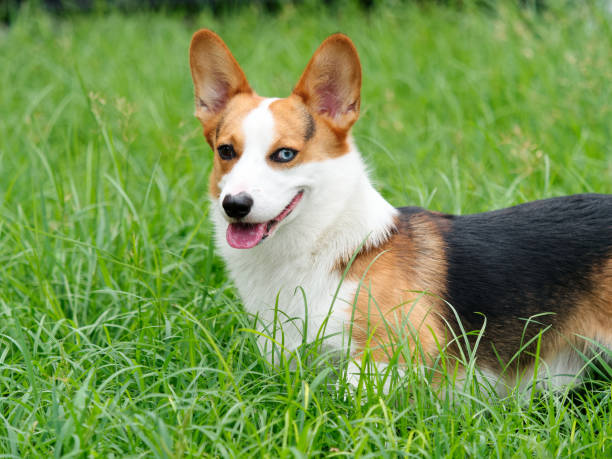

Galerija
Susipažinkite su mūsų smagiaisiais korgiais!
Korgiai yra maži, bet labai energingi šunys, garsėjantys savo trumpomis kojomis ir draugišku charakteriu. Jie yra labai protingi, greitai mokosi ir mėgsta būti šalia žmonių, todėl puikiai tinka šeimoms. Korgiai taip pat pasižymi budrumu ir drąsa, nors jų dydis ir nedidelis.
Šie šunys iš pradžių buvo veisiami ganyti gyvulius, todėl turi stiprų instinktą judėti ir dirbti. Dėl to korgiams reikia pakankamai fizinio aktyvumo ir protinių užduočių. Pasivaikščiojimai, žaidimai ir dresūra padeda jiems jaustis laimingiems ir subalansuotiems.
Lulu – linksma, meili ir labai smalsi, visada ieško dėmesio.
Mikis – žaismingas ir draugiškas, greitai susidraugauja su visais.
Simba – drąsus ir savimi pasitikintis, mėgsta būti „lyderiu“.
Maxas – energingas ir protingas, puikiai mokosi naujų komandų.
Tobis – ramus, švelnus ir ištikimas, dievina glostymus.
Sukis – vikrus, šiek tiek išdykęs, bet labai mielas.




